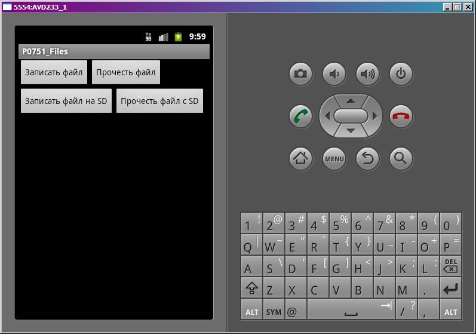

В этом уроке:
- работаем с файлами
Работа с файлами в Android не сильно отличается от таковой в Java. В этом уроке рассмотрим, как записать/прочесть файл во внутреннюю память и на флэшку.
Создадим проект:
Project name: P0751_Files
Build Target: Android 4.0
Application name: Files
Package name: ru.startandroid.develop.p0751files
Create Activity: MainActivity
Заполним strings.xml:
<?xml version="1.0" encoding="utf-8"?>
<resources>
<string name="app_name">P0751_Files</string>
<string name="write_file">Записать файл</string>
<string name="read_file">Прочесть файл</string>
<string name="write_file_sd">Записать файл на SD</string>
<string name="read_file_sd">Прочесть файл с SD</string>
</resources>Рисуем экран main.xml:
<?xml version="1.0" encoding="utf-8"?>
<LinearLayout
xmlns:android="http://schemas.android.com/apk/res/android"
android:layout_width="fill_parent"
android:layout_height="fill_parent"
android:orientation="vertical">
<LinearLayout
android:layout_width="match_parent"
android:layout_height="wrap_content">
<Button
android:id="@+id/btnWrite"
android:layout_width="wrap_content"
android:layout_height="wrap_content"
android:text="@string/write_file"
android:onClick="onclick">
</Button>
<Button
android:id="@+id/btnRead"
android:layout_width="wrap_content"
android:layout_height="wrap_content"
android:text="@string/read_file"
android:onClick="onclick">
</Button>
</LinearLayout>
<LinearLayout
android:layout_width="match_parent"
android:layout_height="wrap_content">
<Button
android:id="@+id/btnWriteSD"
android:layout_width="wrap_content"
android:layout_height="wrap_content"
android:text="@string/write_file_sd"
android:onClick="onclick">
</Button>
<Button
android:id="@+id/btnReadSD"
android:layout_width="wrap_content"
android:layout_height="wrap_content"
android:text="@string/read_file_sd"
android:onClick="onclick">
</Button>
</LinearLayout>
</LinearLayout>4 кнопки, смысл которых понятен по тексту на них.
MainActivity.java:
package ru.startandroid.develop.p0751files;
import java.io.BufferedReader;
import java.io.BufferedWriter;
import java.io.File;
import java.io.FileNotFoundException;
import java.io.FileReader;
import java.io.FileWriter;
import java.io.IOException;
import java.io.InputStreamReader;
import java.io.OutputStreamWriter;
import android.app.Activity;
import android.os.Bundle;
import android.os.Environment;
import android.util.Log;
import android.view.View;
public class MainActivity extends Activity {
final String LOG_TAG = "myLogs";
final String FILENAME = "file";
final String DIR_SD = "MyFiles";
final String FILENAME_SD = "fileSD";
/** Called when the activity is first created. */
@Override
public void onCreate(Bundle savedInstanceState) {
super.onCreate(savedInstanceState);
setContentView(R.layout.main);
}
public void onclick(View v) {
switch (v.getId()) {
case R.id.btnWrite:
writeFile();
break;
case R.id.btnRead:
readFile();
break;
case R.id.btnWriteSD:
writeFileSD();
break;
case R.id.btnReadSD:
readFileSD();
break;
}
}
void writeFile() {
try {
// отрываем поток для записи
BufferedWriter bw = new BufferedWriter(new OutputStreamWriter(
openFileOutput(FILENAME, MODE_PRIVATE)));
// пишем данные
bw.write("Содержимое файла");
// закрываем поток
bw.close();
Log.d(LOG_TAG, "Файл записан");
} catch (FileNotFoundException e) {
e.printStackTrace();
} catch (IOException e) {
e.printStackTrace();
}
}
void readFile() {
try {
// открываем поток для чтения
BufferedReader br = new BufferedReader(new InputStreamReader(
openFileInput(FILENAME)));
String str = "";
// читаем содержимое
while ((str = br.readLine()) != null) {
Log.d(LOG_TAG, str);
}
} catch (FileNotFoundException e) {
e.printStackTrace();
} catch (IOException e) {
e.printStackTrace();
}
}
void writeFileSD() {
// проверяем доступность SD
if (!Environment.getExternalStorageState().equals(
Environment.MEDIA_MOUNTED)) {
Log.d(LOG_TAG, "SD-карта не доступна: " + Environment.getExternalStorageState());
return;
}
// получаем путь к SD
File sdPath = Environment.getExternalStorageDirectory();
// добавляем свой каталог к пути
sdPath = new File(sdPath.getAbsolutePath() + "/" + DIR_SD);
// создаем каталог
sdPath.mkdirs();
// формируем объект File, который содержит путь к файлу
File sdFile = new File(sdPath, FILENAME_SD);
try {
// открываем поток для записи
BufferedWriter bw = new BufferedWriter(new FileWriter(sdFile));
// пишем данные
bw.write("Содержимое файла на SD");
// закрываем поток
bw.close();
Log.d(LOG_TAG, "Файл записан на SD: " + sdFile.getAbsolutePath());
} catch (IOException e) {
e.printStackTrace();
}
}
void readFileSD() {
// проверяем доступность SD
if (!Environment.getExternalStorageState().equals(
Environment.MEDIA_MOUNTED)) {
Log.d(LOG_TAG, "SD-карта не доступна: " + Environment.getExternalStorageState());
return;
}
// получаем путь к SD
File sdPath = Environment.getExternalStorageDirectory();
// добавляем свой каталог к пути
sdPath = new File(sdPath.getAbsolutePath() + "/" + DIR_SD);
// формируем объект File, который содержит путь к файлу
File sdFile = new File(sdPath, FILENAME_SD);
try {
// открываем поток для чтения
BufferedReader br = new BufferedReader(new FileReader(sdFile));
String str = "";
// читаем содержимое
while ((str = br.readLine()) != null) {
Log.d(LOG_TAG, str);
}
} catch (FileNotFoundException e) {
e.printStackTrace();
} catch (IOException e) {
e.printStackTrace();
}
}
}В onclick обрабатываем нажатия 4-х кнопок и вызываем соответствующие методы.
writeFile – запись файла во внутреннюю память. Используется метод openFileOutput, который на вход берет имя файла и режим записи: MODE_PRIVATE – файл доступен только этому приложению, MODE_WORLD_READABLE – файл доступен для чтения всем, MODE_WORLD_WRITEABLE - файл доступен для записи всем, MODE_APPEND – файл будет дописан, а не начат заново.
readFile – чтение файла из внутренней памяти. Используем метод openFileInput, принимающий на вход имя файла. Здесь и в методе записи внутреннего файла вы можете задать только имя файла, а каталог для ваших файлов вам уже выделен.
writeFileSD – запись файла на SD. Используем метод getExternalStorageState для получения состояния SD-карты. Здесь можно посмотреть какие бывают состояния. Нам нужно MEDIA_MOUNTED – когда SD-карта вставлена и готова к работе. Далее мы получаем путь к SD-карте (метод getExternalStorageDirectory), добавляем свой каталог и имя файла, создаем каталог и пишем данные в файл.
readFileSD – чтение файла с SD. Все аналогично предыдущему методу, только файл не пишем, а читаем.
Осталось в манифест добавить разрешение на работу с файлами на SD - android.permission.WRITE_EXTERNAL_STORAGE.
Все сохраним и запустим. Видим экран с 4-мя кнопками:

Внутренняя память
Жмем кнопку Записать файл. Видим в логе:
Файл записан
Проверим. Идем в File Explorer (Window > Show View > Other > Android > File Explorer) и открываем там папку data/data/ru.startandroid.develop.p0751files/files и видим там наш файл file.
Возвращаемся в эмулятор. Жмем Прочесть файл и в логе видим:
Содержимое файла
Это тот текст, который мы записывали в файл.
SD карта
Теперь жмем Записать файл на SD.
В логе видим:
Файл записан на SD: /mnt/sdcard/MyFiles/fileSD
Проверяем. Идем в FileExplorer и открываем там папку mnt/sdcard/MyFiles/ а в ней файл fileSD.
Возвращаемся в эмулятор и жмем кнопку Прочесть файл с SD. В логе видим:
Содержимое файла на SD
Этот текст мы и записывали.
mnt/sdcard - обычно этот путь ведет к содержимому SD-карты. Возможно у вас он будет другой.
В общем, при работе с файлами на SD вы используете стандартные java механизмы. А при работе с внутренним хранилищем для удобства можно использовать методы-оболочки от Activity:
openFileOutput – открыть файл на запись
openFileInput – открыть файл на чтение
deleteFile – удалить файл
И есть метод getFilesDir – возвращает объект File, соответствующий каталогу для файлов вашей программы. Используйте его, чтобы работать напрямую, без методов-оболочек.
Подробности работы в java с файловой системой я здесь описывать не буду. На нашем форуме пользователь SKR сделал отличную памятку по работе с файлами. Скорее всего, вы найдете там все что нужно.
Если у вас проверка SD-карты показывает, что карта недоступна (см. лог), то убедитесь в свойствах AVD, что у вас для SDCard указан Size или File. Если указаны, то попробуйте перезапустить AVD.